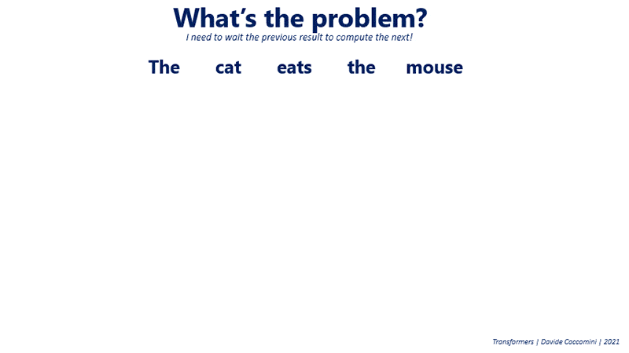
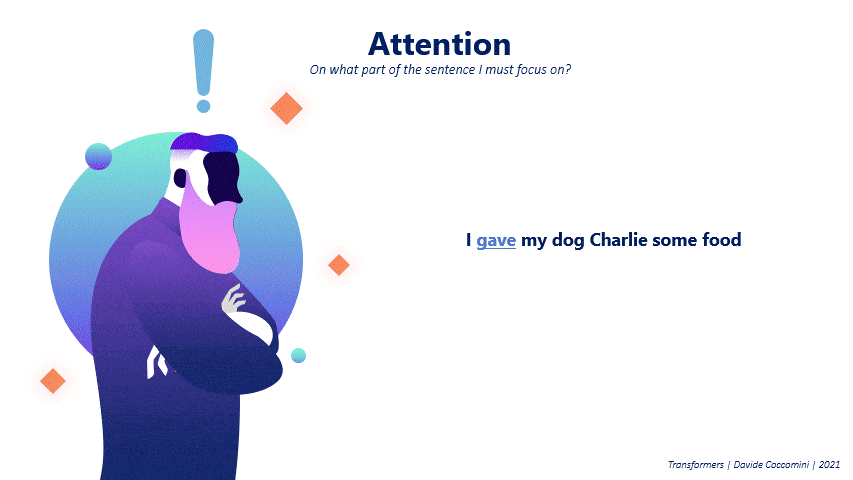
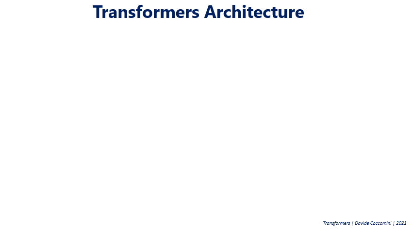
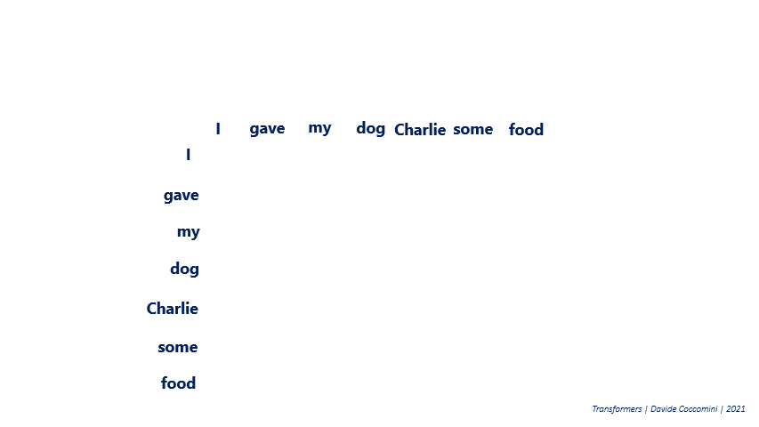
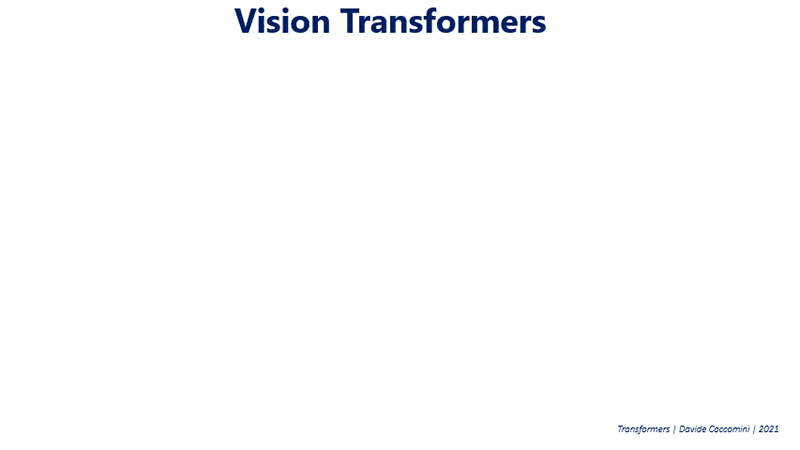
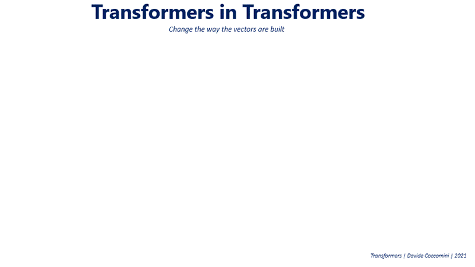
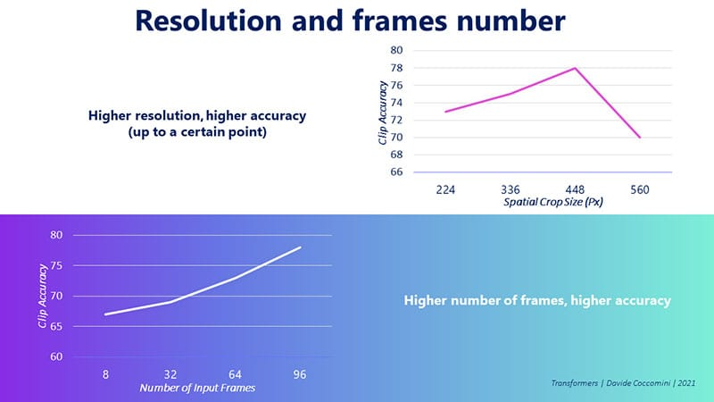
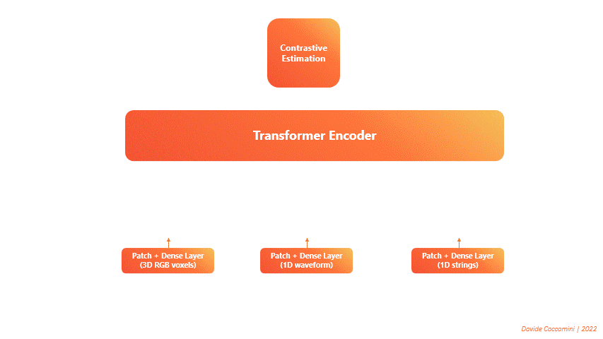

Transformers  #
#
On Transformers, TimeSformers, And Attention

Transformers are a very powerful Deep Learning model that has been able to become a standard in many Natural Language Processing tasks and is poised to revolutionize the field of Computer Vision as well.
Google Brain published the paper “Attention Is All You Need” in 2017 [Vaswani et al., 2017].
The paper introduced the Transformer model, which is a deep learning model that is able to perform well on many NLP tasks.
The model is based on the idea of attention, which is a way of focusing on certain parts of the input.
The model is able to perform well on many NLP tasks, including machine translation, summarization, and question answering.
The model is also able to perform well on many other tasks, including image classification and speech recognition.

In 2020, Google Brain asks “will they be as effective on images?”
The paper “An Image is Worth 16x16 Words: Transformers for Image Recognition at Scale” [Dosovitskiy et al., 2020] was published in 2020.
The model is able to perform well on many Computer Vision tasks, including image classification and object detection.
At the beginning of 2021, Facebook researchers published a new version of the Transformers model, called TimeSformer.
The paper “Is space-time attention all you need for video understanding?” [Bertasius et al., 2021] was published in 2021.
Why do we need transformers?#
What are the problems with the previous models?
The previous models were based on Recurrent Neural Networks (RNNs).
RNNs are able to process sequences of data, such as text or audio.
One of the main problems is its sequential operation.
The model needs to process the input sequentially, which means that it needs to process the first word, then the second word, and so on.
This sequential operation makes it difficult to parallelize the model.
There are also other problems such as gradient explosion, inability to detect dependencies between distant words in the same sentence, and so on.
For example, to translate a sentence from English to Italian, with this type of networks, the first word of the sentence to be translated was passed into an encoder together with an initial state, and the next state was then passed into a second encoder with the second word of the sentence, and so on until the last word. The resulting state from the last encoder is then passed to a decoder that returns as output both the first translated word and a subsequent state, which is passed to another decoder, and so on.

Attention is all you need?#
Is there a mechanism that we can compute in a parallelized manner that allows us to extract the information we need from the sentence?

I gave my dog Charlie some food.
Focusing on the word “gave,” what other words in the sentence should we pay attention on to add context to the word “gave”?
You might ask yourself, “Who gave the food to the dog?”
In this case, the attention mechanism would focus on the words “I.”
If you were to ask yourself, “To whom did I give the food?”
The attention mechanism would focus on the words “dog” and “Charlie.”
If you were to ask yourself, “What did I give to the dog?”
The attention mechanism would focus on the words “food.”
How do we implement this attention mechanism?#
To understand the computation of attention we can draw parallels to the world of databases.
When we do a search in the database we submit a query (Q) and we search among the available data for one or more keys that satisfy the query.
The keys are the words in the sentence and the query is the word we want to focus on.
The result of the search is the value of the key that satisfies the query.

We begin by looking at the sentence on which to compute attention as a set of vectors.
Each word, via a word embedding mechanism, is encoded into a vector K.
These vectors are the keys to search for with respect to a query.
A query is a vector Q that represents the word we want to focus on.
The query could be a word from the same sentence (self-attention) or a word from another sentence (cross-attention).
When then compute the similarity between the query Q and each of the available keys K.
The similarity is computed by multiplying the query Q by the transpose of the keys K.
The result of this operation is a vector of scores that represent the similarity between the query and each of the keys.
The scores are then normalized to obtain a probability distribution by applying the softmax function.
The result of the softmax function is a vector of probabilities that represent the attention weights.
The attention weights are then multiplied by the sentence vector, which is a vector of the same dimension as the keys, where each value represents the word in the sentence.
The result of this operation is a vector that represents the context of the word we want to focus on.
The context vector C is a vector of the same dimensionality as the keys K, where each element is a weighted sum of the keys K.
The context vector C is then passed to a linear layer, which is a fully connected layer, to obtain the final result of the attention mechanism.

Each vector represents a word in the sentence.
The word we want to focus on is represented by the vector Q.
We then compute the similarity between the vector Q and each of the vectors in the sentence.
The similarity is computed by multiplying the vector Q by the vector of each word in the sentence.
The result of the multiplication is a scalar value that represents the similarity between the vector Q and the vector of the word in the sentence.
The scalar value is then passed through a softmax function, which normalizes the values between 0 and 1.
The result of the softmax function is the attention vector.
The attention vector is a vector of the same size as the sentence, where each value represents the attention that should be given to each word in the sentence.
The attention vector is then multiplied by the sentence vector, which is a vector of the same size as the sentence, where each value represents the word in the sentence.
The result of the multiplication is a vector of the same size as the sentence, where each value represents the weighted sum of the words in the sentence.
The weighted sum is then passed through a linear layer, which is a fully connected layer, to obtain the final result.
Multi-head attention#
This mechanism would be sufficient if we wanted to focus on a single word. However, we want to focus on from several points of view.
With a simliar mechanism, we can use multiple keys to focus on different words in the sentence.
The results are then concatenated to obtain a single, summarized vector of all the attention mechanisms.
This mechanism is called multi-head attention.

Tranformer Architecture#
The Transformer architecture is composed of two main components: the encoder and the decoder.

Consider a transformer model that is trained to translate a sentence from English to Italian.
The encoder is responsible for encoding the input sentence into a vector.
The encoder takes as input a sentence in English and returns a vector.
Unlike the RNN, the encoder does not need to process the sentence sequentially.
Before passing the sentence to the encoder, the sentence is first tokenized into words.
Each word is then passed through a word embedding mechanism to obtain a vector.
Before proceeding with the attention computation, the vectors are combined with a positional encoding vector.
The positional encoding vector is a vector of the same size as the word embedding vector, where each value represents the position of the word in the sentence based on sine and cosine functions.
This is important because the order of the words in the sentence is more than relevant and this information is required to understand the meaning of the sentence.
The result of the addition is then passed to the multi-head attention mechanism.
The result is normalized and passed to a feed-forward neural network.
The encoding can be repeated multiple times to obtain a more detailed representation of the sentence.
The decoder is responsible for decoding the vector into a sentence in Italian.
The decoder takes as input the output of the encoder and returns a sentence in Italian.
Assume that we have already translated the first two words and we want to predict the third word of the sentence in Italian.
The decoder takes as input the first two words of the sentence in Italian and the output of the encoder.
The positional encoding and multi-head attention mechanisms are applied to the first two words of the sentence in Italian.
The result is then concatenated with the output of the encoder.
The attention is recalculated on the concatenated vector.
The result is normalized and passed to a feed-forward neural network.
The result will be a vector of potential candidates for the third word of the sentence in Italian.
In the next iteration, the decoder will take as input the first three words of the sentence in Italian and the output of the encoder.

Problems with the Transformer architecture#

The Transformer architecture is a very powerful architecture, but it has some problems.
One of its strengths is also its weakness, the calculation of attention is very expensive.
The attention mechanism is very expensive because it requires a lot of computation.
In order to calculate the attention of each word with respect to all the others I have to perform \(N^2\) calculations.
Graphically you can imagine a matrix that has to be filled with the attention values of each word compared to any other word.
Optionally and usually on the decoder, it is possible to calculate the masked attention to avoid the calculation of the attention of a word with respect to the following words.
The masked attention is a mechanism that allows you to calculate the attention of a word with respect to the previous words.

Attention Is Not All You Need#
In March 2021, Google researchers published a paper titled, “Attention Is Not All You Need” [Dong et al., 2021].
The researchers conducted experiments analyzing the behaviour of the self-attention mechanism conducted without any of the other components of the transformers.
They found that it converges to a rank 1 matrix with a doubly exponential rate.
This means that this mechanism, by itself, is practically useless.
So why are transformers so powerful?#
The researchers found that the self-attention mechanism is not the only component that makes transformers so powerful.
It is due to a tug of war between the self-attention mechanism that tends to reduce the rank of the matrix and two other components of transformers, skip connections and MLP.
The skip connections allow the model to diversify the distribution of paths avoiding all the same path.
This drastically reduces the probability of the model converging to a rank 1 matrix.
The MLP instead manages to increase the rank of the matrix due to the non-linearity of the activation function.
Therefore, attention is not all you need, but it is necessary to have skip connections and MLP to make transformers powerful.
The transformer architecture manages to use the self-attention mechanism to its advantage to achieve impressive results.

Vision Transformers#
“If Transformers have been found to be so effective in the field of Natural Language Processing, how will they perform with images?”

If we consider a picture of a dog standing in front of a wall, we can imagine that the dog is the main subject of the picture and the wall is the background.
This is because we are focusing on the dominant subject of the picture.
This is the same concept that we use to understand the meaning of a sentence.
This is exactly what the self-attention mechanism applied to images does.
How to input images into a transformer?#
A first solution would be to use all the pixels of the image and pass them to the transformer.
This solution is not very efficient because it would require a lot of computation.
The calculation of attention has a complexity equal to \(O(N^2)\), where \(N\) is the number of pixels.
This means that the calculation of attention would require \(O(N^4)\) calculations.
This is not a viable solution because it would require a lot of computation.

The solution is simple.
The image is divided into patches.
Each patch is converted into a vector using a linear projection.

Vision Transformer Architecture#
Vectors obtained from a linear projection are then coupled with positional encoding vectors.
The result is then passed to a classic transformer architecture.
The result is a vector that represents the image.
The vector is then passed to a classifier to obtain the final result.

Transformer in Transformer#
In the transition from patch to vector, any kind of information about the position of pixels in the patch is lost. Is it possible to find a better way to get the vectors to submit to the transformer?
The authors of Transformer in Transformer (TnT) [Han et al., 2021] point out because the arrangement of pixels within a portion of the image to be analyzed is certain information we would not want to lose in order to make a quality prediction.
Their proposal is then to take each individual patch (pxp) of the image, which are themselves images on 3 RGB channels, and transform it into a c-channel tensor.
This tensor is then divided into \(p^\prime\) parts with \(p^\prime<p\), in the example \(p^\prime=4\).
This yields \(p’\) vectors in \(c\) dimensions.
These vectors now contain information about the arrangement of pixels within the patch.
They are then concatenated and linearly projected in order to make them the same size as the vector obtained from the linear projection of the original patch and combined with it.
By doing this the authors have managed to further improve performance on various computer vision tasks.


TimeSformers#
In 2021 Facebook researchers tried to apply this architecture to video as well.
The idea is to divide the video into frames and then apply the same procedure as for images.
There is only one small detail that makes them different from Vision Transformers.
You have to take into account the temporal dimension of the video besides the spatial dimension.

The authors have suggested several new attention mechanisms, from those that focus exclusively on space, used primarily as a reference point, to those that compute attention axially, scattered, or jointly between space and time.


The method that has achieved the best results is Divided Space-Time Attention.
It consists, given a frame at instant t and one of its patches as a query, to compute the spatial attention over the whole frame and then the temporal attention in the same patch of the query but in the previous and next frame.
Why does this approach work so well?
The reason is that it learns more separate features than other approaches and is, therefore, better able to understand videos from different categories.
We can see this in the following visualization where each video is represented by a point in space and its colour represents the category it belongs to.

The authors ound that the higher the resolution the better the accuracy of the model, up to a point.
As for the number of frames, again as the number of frames increases, the accuracy also increases.
It was not possible to make tests with a higher number of frames than that shown in the graph and therefore potentially the accuracy could still improve.
The upper limit of this improvement is not yet known.

In Vision Transformers it is known that a larger training dataset often results in better accuracy. This was also checked by the authors on TimeSformers and again, as the number of training videos considered increases, the accuracy also increases.

Transformers have just landed in the world of computer vision and seem to be more than determined to replace traditional convolutional networks or at least carve out an important role for themselves in this area.
Transformers are a powerful architecture that has revolutionized the field of Natural Language Processing.
They have been able to achieve impressive results in various tasks.
They have also been applied to other areas such as computer vision.
The results obtained are very promising and it is likely that they will continue to improve in the future.
Multimodal Machine Learning#
Having now a single architecture capable of working with different types of data, we can now start to think about how to combine them.
This is called multimodal machine learning.
People are able to combine information from several sources to draw their own inferences.
They simultaneously receive data by observing the world around them with their eyes, but also by smelling its scents, listening to its sounds or touching its shapes.
This is why we are able to understand the world around us.
We can now try to replicate this ability in machines.
The problem lies in treating all the different inputs in the same way without losing information.
Trnasformers are a good candidate for this task.
They are able to process different types of data and combine them in a single architecture.
VATT: Transformers for Multimodal Self-Supervised Learning#
One of the most important applications of Transformers in the field of Multimodal Machine Learning is VATT [Akbari et al., 2021].

The proposed architecture is composed of a single Transformer Encoder on which three distinct forward calls are made.
One call for each type of input data is always transformed into a sequence of tokens.
The transformer takes these sequences as input and returns three distinct sets of features.
Then the features are given in input to a contrastive estimation block that calculates a single loss and performs the backward.
In this way the loss is the result of the error committed on all the three types of data considered.
Therefore the model, between the epochs, will learn to reduce it by managing better the information coming from all the three different sources.
VATT represents the culmination of what Multimodal Machine Learning had been trying to achieve for years, a single model that handles completely different types of data together.
GATO: A Generalist Agent#
Is it possible to realize a neural network capable of receiving inputs of different types and then being able to perform different tasks?
This is the question that the authors of GATO [Reed et al., 2022] have tried to answer.
GATO is a multi-modal, multi-task, multi-embodiment generalist that represents one of the most impressive achievements in this field today.
How does it work?
GATO is composed of a single Transformer Encoder that receives as input a sequence of tokens representing the different types of data.
Thanks to this unification of inputs and to the Transformer architecture, GATO is able to learn to combine the different types of data and to perform different tasks, achieving an unprecedented level of generalisation.